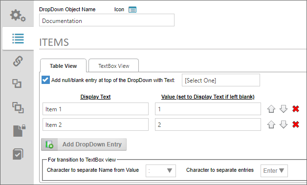
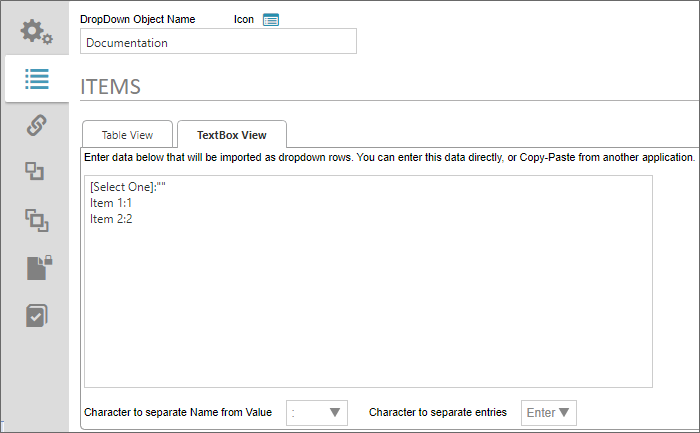
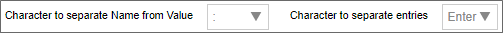
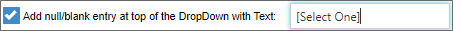
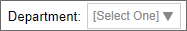
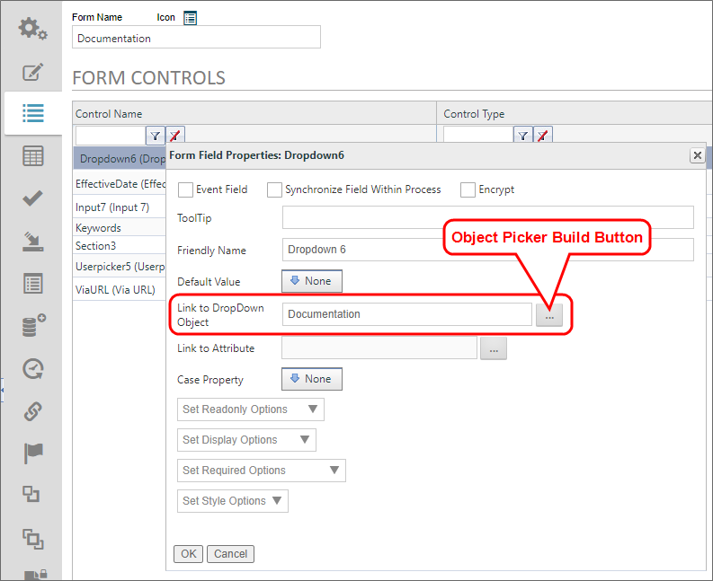
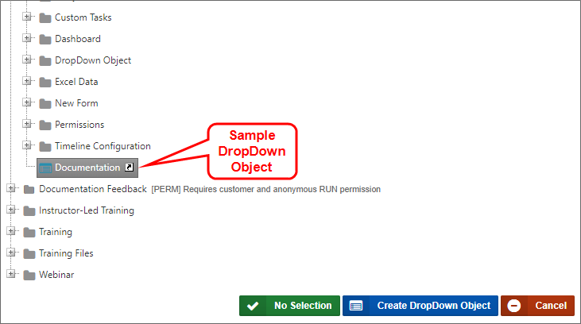

BP Logix recommends that you enable the Null/Blank setting for nearly all use cases.
BP Logix recommends that you enable the Null/Blank setting for nearly all use cases.This object is used to populate the options available in a Dropdown control on a form with the data you create in this object. The DropDown Object is reusable, which means that the same DropDown Object can populate Dropdown controls on many Forms. Some examples of data you might want to create with a DropDown Object might be a list of states/provinces, or countries. Any static list of items can be created using a DropDown Object, then that dropdown object can be used to populate any Dropdown control on any Form controls that needs to use it. Because the DropDown Object is fully resuable, you may wish to create a [DropDown Objects] folder in the Partition root of your installation, so your implementers can have all the available DropDown Objects accessible from the same location.
You can create a DropDown Object by selecting DropDown Object from the Create New... menu dropdown. Enter a name for the object and click the OK button to open the new object definition. Once the object definition opens, navigate to the Items tab, where you'll perform the primary configuration of the object.
On the Items tab you can add, edit, or delete dropdown items by using either the Table View orTextbox View tabs to configure the data. Both tabs contain exactly the same list items in the same order. The two tabs merely provide different methods of configuring the same list of items. You can switch between the two tabs at will during configuration.

The Table View tab can be used to create a list using the product UI.
The first property to configure is labeled, Add null/blank entry at top of the DropDown with Text. When checked, this property adds a blank entry to the top of the dropdown list, using the text you enter into the text box as a user promptwhen the Form is displayed. Please refer to the section labeled, Using Blank Values, below, for more information about the way this setting affects data entry on the Form.
BP Logix recommends that you enable the Null/Blank setting for nearly all use cases.
Click on the Add DropDown Entry button to add an item to the list. Enter a Display Text and optional Value for each item. If you leave the Value column blank, the Display Text value will also be saved as the Value for the associated Dropdown control(s). Otherwise, the Display Text will be the text that is displayed to users in the associated Dropdown control(s), while the Value is the value that will actually be saved with the Form instance.
You can manually set the order of the items to be displayed by using the Up/Down arrow icons to reorder the items in the list. You can also remove items from the list by clicking the Delete (X) icon.
You can manually enter data into your list as rows in the TextBox View tab. You can type or copy and paste text directly into the text box.

By default, each line in the text box creates a new entry in the list. The list displayed above is the same list displayed in the Table View tab. By default, the configuration syntax for the text box view is to provide the Display Text, followed by a colon (:), then the Value text, e.g.:
DisplayText:Value
Note that our blank item is also displayed as the first list item on the TextBox View tab. Please refer to the section labeled, Using Blank Values, below, for more information about the way this setting affects data entry on the Form.
Both the Table View and Textbox View tabs share two properties that enable you to alter the default configuration for the text view of any list. On the Textbox View tab, these are displayed as standalone properties, while on the Table View tab, they are contained in a display section labeled, For transition to TextBox view. In either case, they are the same properties, and govern the syntax used for list items in the textbox view.

Character to separate Name from Value: This property defaults to the colon (:) as the separator character between the Display Text and Value properties for each list item. You can select a different character to use as the separator by selecting it from the dropdown control for this property.
Character to separate entries: This property defaults to the [ENTER] key (new line) as the separator character between each list item. You can select a different character to use as the separator by selecting it from the dropdown control for this property.
BP Logix recommends using the default configuration for these two properties, unless some technical issue requires the use of different characters, such as custom scripting/external data issues. In the vast majority of use cases, this will not be necessary.
When using the property labeled, Add null/blank entry at top of the DropDown with Text, the blank entry will be the default entry that is displayed to the user on the form. For instance, if we configure the Property as shown below:

The user, when filling out the Form, will see the default value of the associated Dropdown control as:

 Having a blank entry is required if you wish to make the Dropdown control a required field on the form. If you do not have a blank item as the default value, the associated Dropdown control, when displayed, will default to the first item in the list, and the control will always have a valid value. As such, even if the user makes no change to the control, the Dropdown will always be evaluated as having met the "Field is Required" setting. Only by creating a blank value as the default can the field be evaluated as not having as required value, and fail the "Field is Required" setting.
Having a blank entry is required if you wish to make the Dropdown control a required field on the form. If you do not have a blank item as the default value, the associated Dropdown control, when displayed, will default to the first item in the list, and the control will always have a valid value. As such, even if the user makes no change to the control, the Dropdown will always be evaluated as having met the "Field is Required" setting. Only by creating a blank value as the default can the field be evaluated as not having as required value, and fail the "Field is Required" setting.
On the Textbox View tab, you can also manually add a blank item as the first item in the list by using the syntax:
DisplayText:""
...where DisplayText is the text you desire to show to users as a prompt when filling out the form. The two quotation marks ("") after the colon specifies that this list item has a blank/null/empty value.
For instance, if you look at the screenshot example in the Textbox View tab section, above, you can see the first line in the text box is:
[Select One]:""
The blank item must always be the first item in the list, because Process Director will always default to the first item in the list as the default value for the Dropdown control.
Once you have finished configuring the DropDown Object, you can save and close your configuration by clicking the OK menu button at the top right corner of the screen.
Now that the object has been saved to the content list, you can associate the DropDown Object to a Dropdown control on a Form by opening the Form definition, and navigating to its Form Controls tab. Open the field properties for the Dropdpown control you wish to associate with the DropDown Object.

The Link to DropDown Object property is an Object Picker that opens a Content List navigation screen when you click the Build button.

You can navigate to the desired DropDown Object to select it, and the Dropdown control will automatically be associated with the correct DropDown Object.
Click here to use the Simulator to create a new DropDown Object and Link it to a Dropdown control on a form.